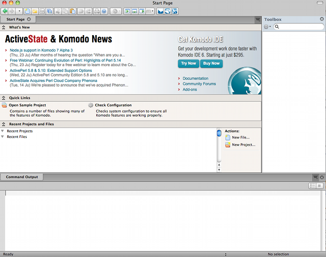
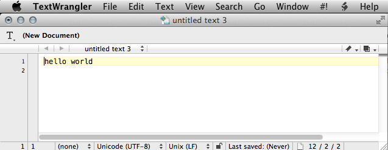
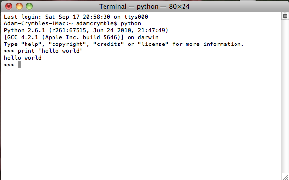

July 17, 2012
Setting Up an Integrated Development Environment for Python (Mac)
- Reviewed by
Miriam Posner
, Jim Clifford
and Amanda Morton
Back up your computer
Mac users can take advantage of the Time Machine for this.
Install Python v.2
As of May 2012, Mac OS X comes preinstalled with Python 2. You can check
to see if you have Python installed by launching the Terminal in the
‘Applications/Utilities’ directory and entering which python
followed by the Enter key. Pushing the Enter key sends the command to
the computer when using the terminal. If you see ‘/usr/bin/python’ or
something similar containing the word ‘python’ and a bunch of slashes,
then you are all set. If not, close the Terminal, download the latest
stable release of the Python programming language (Version 2.7.3 as of
May 2012) and install it by following the instructions on the Python
website.
Create a Directory
To stay organized, it’s best to have a dedicated directory (folder) on
your computer where you will keep your Python programs (e.g.,
programming-historian) and save it anywhere you like on your hard
drive.
Beautiful Soup
Download the latest version of Beautiful Soup and copy it to the directory where you are going to put your own programs. Beautiful Soup is a library (a collection of prewritten code) that makes it easy for Python programs to break web pages down into meaningful chunks that can be further processed.
Install Komodo Edit
Komodo Edit is a free and open source code editor, but as we said in the
introduction, you have many other text editing options. Some of our
testers prefer a program called TextWrangler. Which you use is up to
you, but for the sake of consistency in our lessons, we will be using
Komodo Edit. You can download a copy of Komodo Edit from the Komodo
Edit website. Install it from the .DMG file
##### Start Komodo Edit
It should look something like this:

Komodo Edit on a Mac
If you don’t see the Toolbox pane on the right hand side, choose
View->Tabs & Sidebars ->Toolbox. It doesn’t matter if the Project pane
is open or not. Take some time to familiarize yourself with the layout
of the Komodo editor. The Help file is quite good
##### Configure Komodo Edit
Now you need to set up the editor so that you can run Python programs. In the Toolbox window, click on the gear icon and select “
New Command…“. This will open a new dialog window. Rename your command to “Run Python” and feel free to change the icon if you like. In the“
Command” box, type%(python) %f #and under "Start in," enter %DClick OK. Your new Run Python command should appear in the Toolbox pane
Step 2 – “Hello World” in Python
It is traditional to begin programming in a new language by trying to create a program that says ‘hello world’ and terminates. We will show you how to do this in Python and HTML.
Python is a good programming language for beginners because it is very high-level. It is possible, in other words, to write short programs that accomplish a lot. The shorter the program, the more likely it is for the whole thing to fit on one screen, and the easier it is to keep track of all of it in your mind.
The languages that we will be using are all interpreted. This means that there is a special computer program (known as an interpreter) that knows how to follow instructions written in that language. One way to use the interpreter is to store all of your instructions in a file, and then run the interpreter on the file. A file that contains programming language instructions is known as a program. The interpreter will execute each of the instructions that you gave it in your program and then stop. Let’s try this.
In your text editor, create a new file, enter the following two-line
program and save it to your programming-historian directory as
hello-world.py
# hello-world.py
print 'hello world'
Your chosen text editor should have a “Run” button that will allow you
to execute your program. If you are using TextWrangler, click on the
“#!” button and Run. If all went well, it should look something like
this:

“Hello World” in Python on a Mac
Interacting with a Python shell
Another way to interact with an interpreter is to use what is known as a shell. You can type in a statement and press the Enter key, and the shell will respond to your command. Using a shell is a great way to test statements to make sure that they do what you think they should. This is done slightly differently on Mac, Linux and Windows.
You can run a Python shell by launching the “terminal”. On the Mac, open
the Finder and double-click on Applications -> Utilities -> Terminal
then typing “python” into the window that opens on your screen. At the
Python shell prompt, type
print 'hello world'
and press Enter. The computer will respond with
hello world
When we want to represent an interaction with the shell, we will use
-> to indicate the shell’s response to your command, as shown below:
print 'hello world'
-> hello world
On your screen, it will look more like this:

Python Shell in Mac Terminal
Now that you and your computer are up and running, we can move onto some more interesting tasks. If you are working through the Python lessons in order, we suggest you next try ‘Viewing HTML Files‘